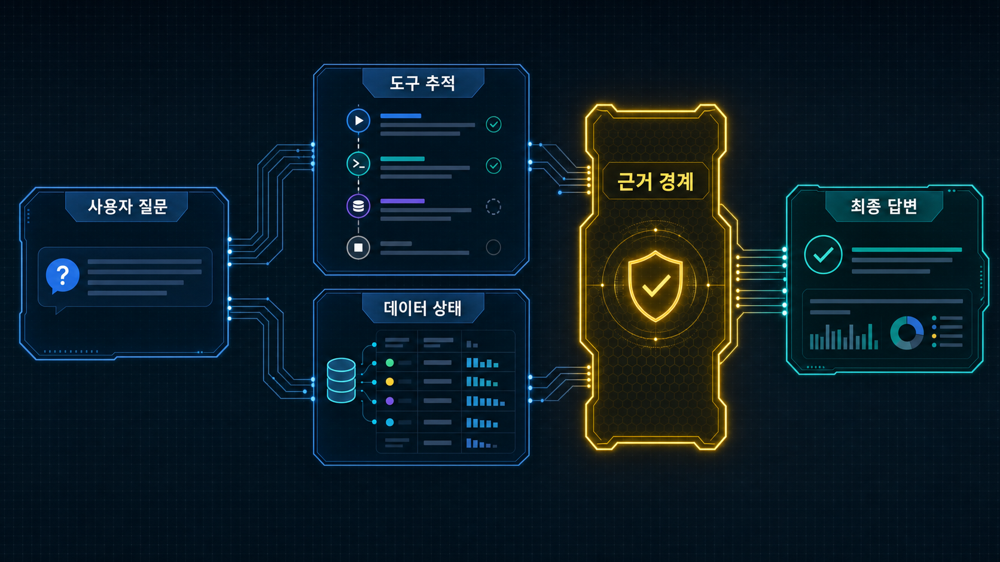
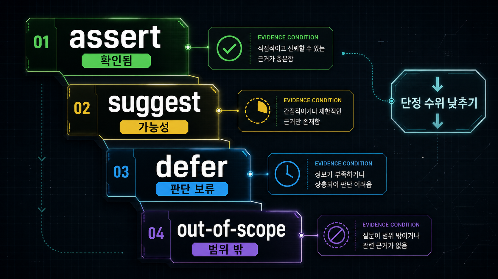
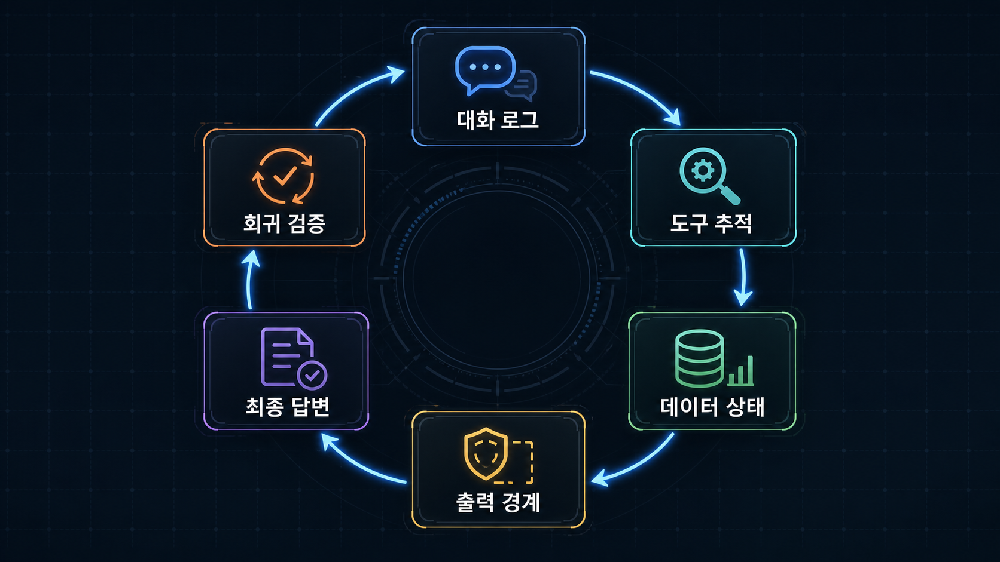

Agent가 나쁜 답변을 했을 때 가장 쉬운 설명은 “환각”이다. 틀린 숫자도, 없는 조건을 붙인 답변도, 내부 표현이 새어 나온 답변도, 오래 걸린 답변도 비슷한 이름으로 묶인다.
하지만 운영자는 그 단어만으로 고칠 곳을 찾기 어렵다. 환각이라는 라벨은 현상을 크게 묶어 주지만 수정 단위를 알려 주지 않는다. 프롬프트를 고칠지, 도구 스키마를 바꿀지, 데이터 집계를 다시 볼지, 최종 출력 필터를 추가할지 판단할 수 없다.
운영 관점에서 더 쓸모 있는 질문은 이것이다.
이 답변 문장은 실제로 확인된 근거 범위 안에 있는가?
이 글의 주장은 단순하다. Agent 품질 운영은 답변을 더 그럴듯하게 만드는 일이 아니다. 답변이 말할 수 있는 근거 경계를 관리하는 일이다. 프롬프트 개선은 그중 한 수단일 뿐이다.

이 글의 관점
이 글에서 말하는 evidence boundary, assertion level, source_scope, verification loop는 특정 제품이나 표준의 이름이 아니다. Agent 답변을 운영할 때 문장, 근거, 도구 결과, 최종 출력 경계를 함께 보기 위한 실무 프레임이다. RAG 평가에서 말하는 faithfulness, tool/function calling에서 필요한 구조화된 결과, trace 기반 관측성에서 빌려 온 문제의식을 Agent 품질 운영 언어로 다시 묶었다.
짧게 인용하면 이렇게 말할 수 있다.
Agent 품질 운영은 답변을 더 그럴듯하게 만드는 일이 아니라, 답변 문장이 말할 수 있는 근거 경계를 관리하는 일이다.
한 문장 답: Agent 품질 관리는 어디서 시작해야 하나
Agent 품질 관리는 “모델이 왜 틀렸나”보다 “이 문장이 어떤 근거까지 말할 수 있었나”에서 시작하는 편이 낫다. 답변 문장을 도구 결과, 데이터 상태, 사용자 조건, 최종 출력 경계와 연결하면 실패가 작게 쪼개진다. 그다음에 프롬프트, 스키마, 라우팅, sanitizer, 회귀 테스트 중 무엇을 고칠지 정할 수 있다.
문제: 나쁜 답변을 하나의 이름으로 부르면 디버깅할 수 없다
도메인 상담 Agent의 실패는 겉으로 비슷하다. 사용자는 “답변이 이상하다”고 느낀다. 운영 로그에는 실패 사례가 쌓인다. 그러나 안쪽 원인은 서로 다르다.
| 겉으로 보이는 문제 | 실제로 봐야 할 원인 | 수정 단위 |
|---|---|---|
| 숫자가 틀렸다 | 단위 변환, 집계 기준, 표시 포맷이 어긋났는가 | 계산 계약, 응답 포맷 |
| 위치나 조건을 임의로 붙였다 | 도구가 반환한 공간 범위를 넘어섰는가 | 도구 결과 스키마, 표현 등급 |
| 이전 대화 때문에 엉뚱한 조회를 했다 | 현재 질문과 이전 조건을 잘못 결합했는가 | 라우팅 규칙, 컨텍스트 압축 |
| 내부 구현어가 사용자에게 보였다 | 최종 출력 경계가 없었는가 | egress sanitizer, 금지 표현 변환 |
| 답변이 늦었다 | 도구가 느린가, 재시도 루프가 긴가, 최종 생성이 긴가 | trace 분해, retry 정책 |
| 말은 맞지만 과하게 단정했다 | 데이터가 결론을 보장하지 못하는가 | assertion level 규칙 |
이 표의 핵심은 “모델이 이상하다”라는 설명을 최대한 늦게 꺼내는 데 있다. 모델 자체가 원인일 수는 있다. 다만 먼저 답변 문장, 도구 결과, 데이터 상태, 최종 출력 경계를 분리하면 더 작은 수정 단위가 보인다.
예를 들어 도구가 “가까운 지점”만 반환했는데 Agent가 “목적지까지 바로 이동할 수 있다”고 답했다고 하자. 이 실패는 교통 지식 부족보다 근거 범위 초과에 가깝다. 도구 결과가 보장한 것은 가까움이지 이동 가능성 전체가 아니다.
특정 기간의 평균값만 있는데 Agent가 “상승세”라고 말하는 경우도 비슷하다. 값이 틀린 게 아닐 수 있다. 문제는 평균값이라는 근거에서 추세라는 결론으로 건너뛴 데 있다.
개념 1: evidence boundary, 근거 경계
Evidence boundary는 답변이 말할 수 있는 범위다. 여기서 경계는 법률 용어가 아니라 운영 용어다. Agent가 조회한 도구, 받은 필드, 접근 가능한 데이터, 사용자의 질문 조건이 함께 만드는 답변 가능 범위를 뜻한다.
운영 프레임으로 정리하면 이렇다.
| 개념 | 정의 | 예시 |
|---|---|---|
| 근거 | 도구 결과, 데이터 필드, 사용자 입력, 명시된 정책처럼 답변을 지탱하는 정보 | ”면적: 84”, “최근 조회 시점”, “사용자가 입력한 예산” |
| 근거 경계 | 그 근거로 말할 수 있는 결론의 최대 범위 | ”면적은 84로 표시된다”까지는 가능, “넓게 느껴진다”는 추가 근거 필요 |
| 근거 초과 | 답변이 근거 경계를 넘어 추론·단정·약속을 만드는 순간 | ”평균값”만 보고 “상승세”라고 단정 |
| 경계 관리 | 답변 전후로 근거와 표현 수위를 맞추는 절차 | 표현 등급 규칙, sanitizer, 샘플링 리뷰 |
근거 경계 관점으로 보면 “나쁜 답변”은 여러 하위 문제로 나뉜다.
- 데이터가 없는데 있다고 말한다.
- 데이터는 있지만 의미를 과장한다.
- 도구 결과를 사용자 언어로 옮기며 범위를 넓힌다.
- 내부 운영 표현을 그대로 노출한다.
- 실제로 제공할 수 없는 액션을 약속한다.
이 분해가 필요한 이유는 수정 위치가 다르기 때문이다. 데이터가 없으면 retrieval이나 source coverage 문제다. 의미를 과장했다면 assertion level 문제다. 내부 표현이 나갔다면 최종 출력 경계 문제다. 같은 “환각”으로 묶으면 모두 프롬프트 문제처럼 보인다.
개념 2: assertion level, 표현 등급
도구를 쓴 Agent라도 모든 문장을 강하게 말할 수 있는 것은 아니다. 도구 결과는 대개 필드 단위로 좁게 온다. 최종 답변은 문장 단위로 넓게 나간다. 과장은 이 틈에서 생긴다.
그래서 답변 문장에는 표현 등급이 필요하다. 아래 표는 운영에서 바로 쓰기 쉬운 최소 버전이다.
| 표현 등급 | 답변 문장 | 필요한 근거 | 실패 신호 |
|---|---|---|---|
| assert | ”A입니다”, “B로 확인됩니다” | 도구 필드와 1:1로 대응되는 값 | 필드에는 없는데 단정한다 |
| suggest | ”A일 가능성을 시사합니다” | 간접 지표, 제한된 표본, 일반 맥락 | 시사 수준인데 결론처럼 말한다 |
| defer | ”현재 데이터만으로는 판단하기 어렵습니다” | 필요한 필드가 없거나 표본이 부족함 | 모르는 것을 추론으로 채운다 |
| out-of-scope | ”이 범위는 확인할 수 없습니다” | Agent 권한 밖 정보, 조회하지 않는 데이터 | 확인 불가 영역을 약속한다 |

이 규칙은 거창한 평가 프레임워크가 아니다. 문장 생성 직전에 적용하는 작은 계약에 가깝다.
예시는 이렇다.
| 도구가 실제로 준 것 | 나쁜 답변 | 더 안전한 답변 |
|---|---|---|
| ”주변 지점 3개" | "접근성이 좋습니다" | "조회된 기준에서는 주변 지점 3개가 확인됩니다. 실제 이동 편의는 별도 확인이 필요합니다" |
| "최근 30일 평균" | "가격이 오르는 중입니다" | "최근 30일 평균은 이전 조회값보다 높습니다. 장기 추세 판단에는 더 긴 시계열이 필요합니다" |
| "문서 일부 발췌" | "정책상 가능합니다" | "발췌된 문서 범위에서는 가능 조건이 언급됩니다. 예외 조항은 추가 확인이 필요합니다" |
| "조회 실패" | "자료가 없습니다" | "현재 조회가 실패했습니다. 데이터가 없다고 단정할 수는 없습니다” |
좋은 답변은 덜 말하는 답변이 아니다. 확인한 것은 분명히 말하고, 확인하지 못한 부분에서 표현 등급을 낮추는 답변이다.
개념 3: issue taxonomy, 이슈 분류
품질 이슈를 모으기 시작하면 라벨을 아주 세밀하게 만들고 싶어진다. 수치 오류, 단위 오류, 위치 매칭 오류, 도구 선택 오류, 내부 표현 노출, 응답 지연, 이전 조건 누락, 정책 문구 과장처럼 계속 나뉜다.
초기에는 반대로 하는 편이 낫다. 상위 라벨을 적게 두고, 반복되는 미분류 케이스가 생길 때만 하위 라벨을 추가한다.
| 상위 라벨 | 보는 질문 | 하위 예시 | 대표 수정 |
|---|---|---|---|
| data | 데이터가 충분하고 신선한가 | 단위, 표본 부족, 집계 의미, source freshness | 계산 계약, 데이터 보강, 결측 처리 |
| tool | 맞는 도구를 골랐고 결과를 제대로 소비했나 | 라우팅 오류, 실패 후 재시도, 필드 누락 | 도구 설명, schema, retry 정책 |
| context | 현재 질문과 이전 조건을 올바르게 결합했나 | 조건 누락, 이전 턴 과잉 반영, 사용자 의도 오해 | context window, state reset, 질의 재작성 |
| security | 사용자에게 나가면 안 되는 정보가 나갔나 | 내부 경로, 운영 구현어, 권한 밖 신호 | egress sanitizer, redaction rule |
| latency | 어느 구간에서 시간이 걸렸나 | 도구 시간, 재시도, reasoning loop, first token delay | trace 분해, timeout, fallback |
| UX | 사용자가 다음 행동을 할 수 있는가 | 모호한 안내, 과도한 disclaimer, 불필요한 장문 | 답변 템플릿, action summary |
Taxonomy의 목적은 완벽한 분류가 아니다. 같은 실패를 다시 볼 수 있게 만드는 것이다. 라벨이 너무 많으면 운영자가 지친다. 너무 적으면 모든 문제가 “기타”로 간다. 좋은 기준은 라벨을 붙인 뒤 수정 위치가 바로 떠오르는가다.
관측 모델: 로그, 도구, 데이터, 출력 경계를 같이 본다
대화 로그는 가장 접근하기 쉬운 증거다. 사용자가 무엇을 물었고 Agent가 무엇을 답했는지 보인다. 그러나 로그만 보면 원인을 자주 오해한다.
도구 호출은 실패했지만 fallback 조회가 성공했을 수 있다. 도구는 성공했는데 최종 문장이 결과를 과장했을 수도 있다. 데이터에는 값이 있었지만 Agent가 다른 도구로 라우팅했을 수도 있다. 데이터 값은 맞았지만 집계 의미를 잘못 읽었을 수도 있다.
그래서 최소 네 층을 분리해서 본다.

| 층 | 확인할 질문 | 남겨야 할 증거 |
|---|---|---|
| conversation log | 사용자가 무엇을 물었고 최종 답변은 무엇이었나 | 질문, 답변, 이전 턴 요약 |
| tool trace | 어떤 도구를 호출했고 어떤 필드가 채워졌나 | tool name, args, result schema, error |
| data state | 그 시점의 원천 데이터는 무엇을 보장했나 | record snapshot, freshness, aggregation basis |
| egress boundary | 사용자에게 나가기 직전 무엇이 바뀌거나 차단됐나 | redaction, rewrite, unsupported promise block |
이 네 층을 분리하면 수정 단위가 작아진다. 프롬프트 한 줄로 충분한지, 도구 결과에 source_scope를 넣어야 하는지, 데이터 집계 설명을 바꿔야 하는지, 최종 출력 sanitizer가 필요한지 판단할 수 있다.
간단한 pseudo-flow는 다음과 같다.
user question
-> context resolver
-> tool router
-> tool result {value, source_scope, confidence, caveat}
-> answer planner {claim -> evidence -> assertion_level}
-> egress sanitizer {private terms, unsupported promises, over-assertion}
-> final answer
-> sampling review + regression scenario여기서 핵심은 tool result가 단순한 값 목록으로 끝나지 않는다는 점이다. 값과 함께 이 값이 어디까지 말할 수 있는지 전달해야 한다.
{
"value": "최근 조회 기준 주변 지점 3개",
"source_scope": "현재 데이터에 등록된 지점만 포함",
"confidence": "medium",
"caveat": "실제 이동 시간과 혼잡도는 확인하지 않음"
}이런 메타데이터가 없으면 모델은 빈칸을 자연어로 메운다. 문장은 매끄러워지지만 그 매끄러움이 근거 초과를 숨긴다.
source_scope: 값보다 범위가 먼저다
source_scope는 출처 URL을 적는 칸이 아니다. 어떤 값이 어떤 데이터 범위, 시간, 권한, 집계 기준 안에서 나온 값인지 설명하는 칸이다. 이 필드가 있어야 Agent가 “값은 맞지만 결론은 과한” 답변을 줄일 수 있다.
| 질문 | source_scope에 들어갈 내용 | 막고 싶은 과잉 해석 |
|---|---|---|
| 어디까지 포함했나 | 등록 데이터, 조회 가능한 문서, 특정 기간, 특정 지역 | 전체 시장·전체 정책을 본 것처럼 말하기 |
| 어디부터 제외되나 | 외부 데이터, 비공개 조건, 실시간 상황, 예외 조항 | 확인하지 않은 조건까지 약속하기 |
| 어떤 기준으로 집계했나 | 평균, 최신값, 표본 수, freshness | 평균을 추세로, 표본을 일반 결론으로 바꾸기 |
그래서 source_scope는 answer planner보다 앞단에 있어야 한다. 문장이 만들어진 뒤에 “과장하지 말라”고 고치는 것보다, 도구 결과가 처음부터 말할 수 있는 범위를 들고 오는 편이 낫다.
구현 패턴 1: 도구 결과에 scope와 caveat를 넣는다
도구 출력은 모델에게 주는 계약서다. 계약서가 애매하면 모델은 친절해지려고 빈칸을 채운다. 그래서 도구 결과에는 값뿐 아니라 값의 의미 범위도 들어가야 한다.
권장 필드는 네 가지 정도면 충분하다.
| 필드 | 역할 | 예시 |
|---|---|---|
| value | 실제로 확인된 값 | ”평균 3.2” |
| source_scope | 값이 나온 데이터 범위 | ”최근 30일, 등록 데이터 기준” |
| confidence | 운영상 신뢰 수위 | high, medium, low |
| caveat | 답변에 같이 반영해야 할 제한 | ”표본 수가 작음”, “외부 조건 미반영” |
이 구조의 장점은 prompt에만 의존하지 않는 데 있다. 모델에게 “과장하지 마”라고 말하는 것보다, 과장하기 어려운 입력을 주는 편이 안정적이다.
구현 패턴 2: 프롬프트에는 표현 등급 규칙을 넣는다
프롬프트도 필요하다. 다만 프롬프트는 만능 수정 도구가 아니라, 앞단의 evidence metadata를 문장으로 바꾸는 규칙이어야 한다.
예를 들면 이런 규칙이다.
For each user-facing claim:
1. Find the supporting tool field.
2. If the claim maps 1:1 to a field, use assert.
3. If the claim depends on indirect evidence, use suggest.
4. If required evidence is missing, use defer.
5. If the question asks outside available data or permission, use out-of-scope.
6. Never upgrade suggest/defer into assert for fluency.한국어 답변이라면 같은 규칙을 사용자 표현으로 매핑한다.
| 내부 등급 | 사용자 표현 |
|---|---|
| assert | ”확인됩니다”, “표시됩니다” |
| suggest | ”가능성을 시사합니다”, “참고할 수 있습니다” |
| defer | ”현재 데이터만으로는 단정하기 어렵습니다” |
| out-of-scope | ”이 범위는 현재 확인할 수 없습니다” |
주의할 점은 disclaimer를 늘리지 않는 것이다. 모든 문장에 “단, 확인 필요”를 붙이면 UX가 무너진다. 필요한 곳에서만 등급을 낮추고, 확인된 값은 짧게 말해야 한다.
구현 패턴 3: egress sanitizer는 삭제보다 변환에 가깝다
Agent가 내부 도구와 데이터를 쓰는 순간, 최종 출력 경계는 별도 제품 영역이 된다. 모델이 좋은 답을 만들었다고 끝이 아니다. 사용자에게 나가기 직전 한 번 더 걸러야 한다.
차단해야 할 것은 대체로 네 종류다.
| 유형 | 위험 | 처리 |
|---|---|---|
| 내부 구현어 | 사용자가 알 필요 없는 시스템 구조 노출 | 사용자 언어로 변환 |
| 내부 경로·식별자 | 보안·프라이버시 노출 | 삭제 또는 일반화 |
| unsupported promise | 실제로 수행하지 않은 생성·다운로드·예약 약속 | 가능 범위로 낮추기 |
| over-assertion | 근거 없는 단정 | suggest/defer로 낮추기 |
여기서 sanitizer는 단순 금칙어 필터가 아니다. 많은 경우 삭제보다 변환이 맞다.
| 내부식 표현 | 사용자식 표현 |
|---|---|
| ”테이블에서 조회했습니다" | "현재 확인 가능한 데이터 기준으로는" |
| "스코어가 낮습니다" | "추가 확인이 필요한 신호가 있습니다" |
| "파일을 생성했습니다" | "요청하신 형식의 초안을 준비했습니다" |
| "쿼리 실패" | "현재 조회가 완료되지 않았습니다” |
운영자는 내부 신호를 보존하고 싶고, 사용자는 의미 있는 안내를 원한다. 최종 출력 경계는 이 둘을 분리하는 층이다.
구현 패턴 4: 지연도 trace로 분해한다
품질은 정확도만의 문제가 아니다. 상담형 Agent에서는 지연도 품질 이슈다. “Agent가 느리다”는 불평을 하나의 숫자로 보면 고치기 어렵다.
지연은 최소 네 구간으로 나눠야 한다.
| 구간 | 봐야 할 것 | 흔한 오해 |
|---|---|---|
| tool time | 외부 조회나 계산 자체가 느린가 | 도구가 느리다고 단정 |
| retry time | 실패 해석과 재시도 루프가 길어지는가 | 안정성을 위해 필요한 시간으로 착각 |
| reasoning time | 여러 결과를 받은 뒤 판단이 길어지는가 | 모델 생성 시간으로만 기록 |
| first response delay | 내부 생성과 사용자 화면 표시 사이가 늦는가 | 실제로는 생성됐는데 사용자에게 안 보임 |
이렇게 나누면 “느리다”가 “실패 후 재시도 정책이 과하다” 또는 “첫 응답 표시 기준이 늦다” 같은 수정 가능한 문장으로 바뀐다.
검증 루프: detect에서 answer sampling까지
품질 운영은 한 번의 수정으로 끝나지 않는다. 좋은 루프는 발견, 분류, 근거 재검증, 최소 수정, 회귀 시나리오, 실제 답변 샘플링까지 이어진다.
1. detect
나쁜 답변 또는 사용자 불만을 캡처한다.
2. classify
data / tool / context / security / latency / UX 중 하나로 먼저 분류한다.
3. verify evidence
conversation log, tool trace, data state, egress boundary를 같이 본다.
4. patch minimal surface
prompt, schema, routing, sanitizer, retry policy 중 가장 작은 수정 위치를 고른다.
5. add regression scenario
같은 근거 초과가 다시 나오지 않도록 테스트 케이스를 만든다.
6. sample real answers
테스트 통과만 보지 않고 실제 답변 문장을 읽는다.마지막 단계가 특히 중요하다. 문자열 기반 테스트는 쉽게 과적합된다. 금지 문구를 늘리면 모델이 다른 표현으로 같은 문제를 반복할 수 있다. “강한 단정”은 사라졌지만 “약한 단정”이 남는 경우도 있다. 이건 실제 답변 샘플을 읽어야 보인다.
회귀 시나리오는 특정 문장보다 근거 구조를 잡아야 한다.
| 나쁜 회귀 테스트 | 더 나은 회귀 테스트 |
|---|---|
| ”접근성이 좋습니다”라는 문장이 없어야 함 | 도구가 주변 지점만 반환할 때 이동 편의성을 assert하지 않아야 함 |
| ”상승세”라는 단어가 없어야 함 | 단기 평균만 있을 때 장기 추세를 suggest 이상으로 올리지 않아야 함 |
| ”조회 실패”를 말하지 않아야 함 | 조회 실패를 데이터 부재로 단정하지 않아야 함 |
| 내부 용어 목록을 출력하지 않아야 함 | 내부 용어가 사용자 의미로 변환되거나 차단되어야 함 |
실무 적용 순서: 프롬프트보다 먼저 볼 것
현장에서 바로 적용한다면 순서는 단순하다. 먼저 실패 답변을 문장 단위로 자른다. 각 문장이 어떤 필드, 어떤 데이터 범위, 어떤 사용자 조건에 기대는지 표시한다. 그다음 표현 등급을 붙인다. 마지막으로 수정 위치를 하나만 고른다.
| 단계 | 질문 | 산출물 |
|---|---|---|
| 1. 문장 분해 | 답변의 핵심 claim은 무엇인가 | claim 목록 |
| 2. 근거 연결 | 각 claim은 어떤 도구 필드나 데이터 상태에 기대는가 | claim-evidence 매핑 |
| 3. 표현 등급 | assert로 말해도 되는가, suggest/defer가 맞는가 | assertion level |
| 4. 경계 처리 | 사용자에게 나가면 안 되는 표현이나 약속이 있는가 | egress 변환 규칙 |
| 5. 회귀화 | 같은 근거 초과를 다시 잡을 수 있는가 | regression scenario |
이 순서를 따르면 “프롬프트를 더 세게 쓰자”로 바로 가지 않는다. 근거가 비어 있으면 데이터나 retrieval 문제다. 근거는 있는데 의미가 넓어졌다면 표현 등급 문제다. 내부 신호가 사용자 언어로 바뀌지 않았다면 출력 경계 문제다.
운영 체크리스트
Agent 품질 이슈를 볼 때는 아래 순서로 묻는 편이 좋다.
- 답변의 핵심 결론은 어떤 도구 필드와 1:1로 대응되는가?
- 도구 결과의
source_scope와 최종 표현 수위가 맞는가? - 필요한 데이터가 없을 때 defer 또는 out-of-scope로 낮췄는가?
- conversation log만 본 것은 아닌가? tool trace와 data state를 같이 봤는가?
- 사용자에게 나가기 직전 egress boundary가 적용됐는가?
- 내부 구현어, 내부 식별자, unsupported promise가 남아 있지 않은가?
- 지연을 tool time, retry time, reasoning time, first response delay로 나눴는가?
- 회귀 테스트가 특정 단어 차단에만 과적합되어 있지 않은가?
- 실제 답변 샘플을 다시 읽었는가?
FAQ
evidence boundary와 source_scope는 어떻게 다른가?
Evidence boundary는 답변 전체가 넘지 말아야 할 근거 범위다. source_scope는 그 경계를 계산할 때 쓰는 도구 결과의 메타데이터다. 쉽게 말하면 source_scope는 입력 쪽 계약이고, evidence boundary는 최종 답변 문장이 지켜야 할 출력 쪽 경계다.
assertion level은 왜 필요한가?
같은 근거라도 문장 수위는 달라질 수 있다. 필드 값과 1:1로 맞으면 assert가 가능하지만, 간접 지표만 있으면 suggest에 머물러야 한다. 필요한 근거가 없으면 defer나 out-of-scope가 맞다. assertion level은 모델의 말투를 부드럽게 만드는 장치가 아니라, 근거와 결론 사이의 거리를 표시하는 장치다.
verification loop는 테스트와 무엇이 다른가?
테스트는 정해 둔 시나리오를 다시 확인하는 장치다. verification loop는 실패 답변을 발견하고, 근거를 재검증하고, 최소 수정 위치를 고른 뒤, 회귀 시나리오와 실제 답변 샘플링까지 이어지는 운영 절차다. 문자열 금지만 늘리면 테스트는 통과해도 같은 근거 초과가 다른 표현으로 남을 수 있다.
Agent 품질 관리는 결국 프롬프트 개선 아닌가?
프롬프트는 한 부분이다. 하지만 프롬프트만으로는 부족하다. 도구 스키마가 애매하면 모델은 빈칸을 추론으로 채운다. 데이터 상태를 보지 않으면 원인이 데이터 누락인지 답변 생성 문제인지 구분할 수 없다. 최종 출력 경계가 없으면 내부 표현이 사용자에게 나갈 수 있다.
모든 답변을 데이터까지 검증해야 하나?
아니다. 전수 검증은 운영을 멈추게 만든다. 대신 이슈가 발생한 케이스, 새 정책을 배포한 직후, 회귀 위험이 높은 시나리오에서는 conversation log, tool trace, data state를 함께 봐야 한다. 평상시에는 샘플링 전략이 필요하다.
taxonomy는 얼마나 자세해야 하나?
처음에는 data, tool, context, security, latency, UX 정도면 충분하다. 미분류 케이스가 반복될 때 하위 라벨을 추가한다. 라벨 체계는 문서가 아니라 운영 도구다. 라벨을 붙인 뒤 수정 위치가 떠오르지 않으면 라벨이 너무 추상적이거나 너무 세밀한 것이다.
환각을 완전히 없앨 수 있나?
완전히 없애겠다는 목표는 위험하다. 더 현실적인 목표는 답변이 근거 범위를 넘는 순간을 빨리 발견하고, 표현 등급을 낮추고, 회귀 시나리오로 다시 막는 것이다. Agent 품질 운영은 무결한 모델을 만드는 일이 아니라 근거 경계를 관리하는 일에 가깝다.
마무리: 좋은 Agent는 확인한 만큼만 말한다
Agent 품질 운영을 “나쁜 답변 모음”으로 시작하면 금방 막힌다. 사례는 쌓이지만 수정 단위가 흐려진다. 반대로 근거 경계로 시작하면 디버깅 경로가 생긴다.
먼저 답변 문장이 어떤 근거에 기대는지 본다. 그 근거가 허용하는 표현 등급을 정한다. 이슈를 data, tool, context, security, latency, UX로 나눈다. 로그만 보지 않고 tool trace, data state, egress boundary를 같이 본다. 수정 뒤에는 회귀 시나리오와 실제 답변 샘플링으로 다시 확인한다.
좋은 Agent는 모든 것을 아는 Agent가 아니다. 확인한 것은 분명히 말하고, 확인하지 못한 것은 확인하지 못했다고 말하는 Agent다.
그 기준을 시스템으로 만들 때, 품질 관리는 prompt polishing이 아니라 evidence boundary management가 된다.
참고한 공개 자료
이 글의 프레임은 아래 자료를 그대로 요약한 것이 아니라, Agent 품질 운영 관점에서 재구성한 해석이다. 특히 evidence boundary, assertion level, source_scope라는 용어 구성은 이 글의 설명을 위해 사용했다.
- Ragas, “Faithfulness” metric documentation: RAG 답변이 주어진 컨텍스트에 의해 뒷받침되는지를 평가하는 문제의식과 연결된다. https://docs.ragas.io/en/stable/concepts/metrics/available_metrics/faithfulness/
- OpenAI, “Function calling” documentation: 모델이 외부 도구와 구조화된 인자를 주고받을 때 도구 결과의 구조가 중요해진다는 맥락에서 참고했다. https://platform.openai.com/docs/guides/function-calling
- OpenTelemetry, “Semantic conventions for generative AI systems”: Agent 실행을 trace와 event로 관측해야 한다는 운영 관점과 연결된다. https://opentelemetry.io/docs/specs/semconv/gen-ai/
- W3C, “Trace Context”: 여러 시스템을 지나가는 요청을 추적 가능한 맥락으로 연결한다는 관측성의 기본 전제를 참고했다. https://www.w3.org/TR/trace-context/